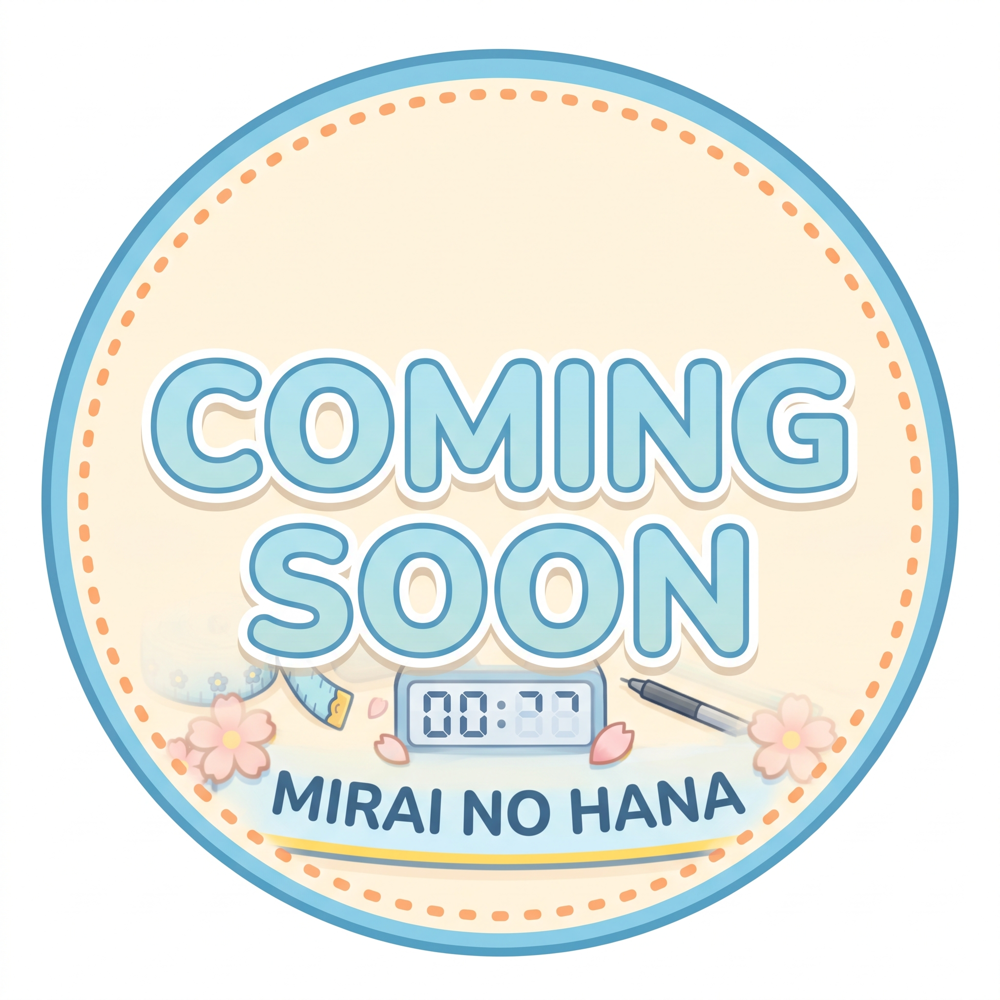
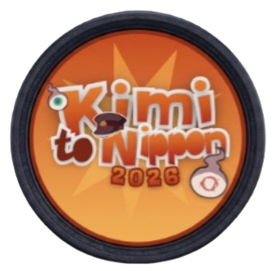
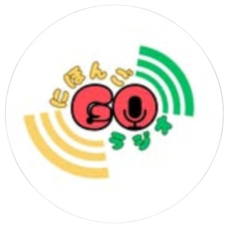
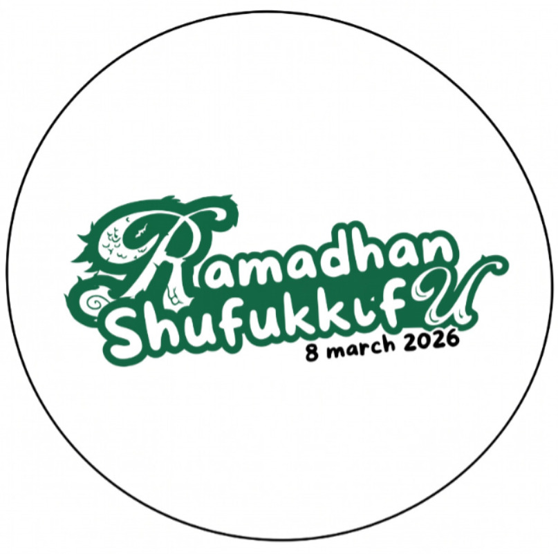
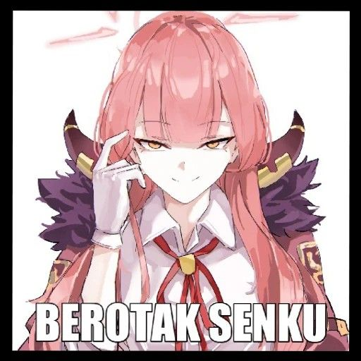
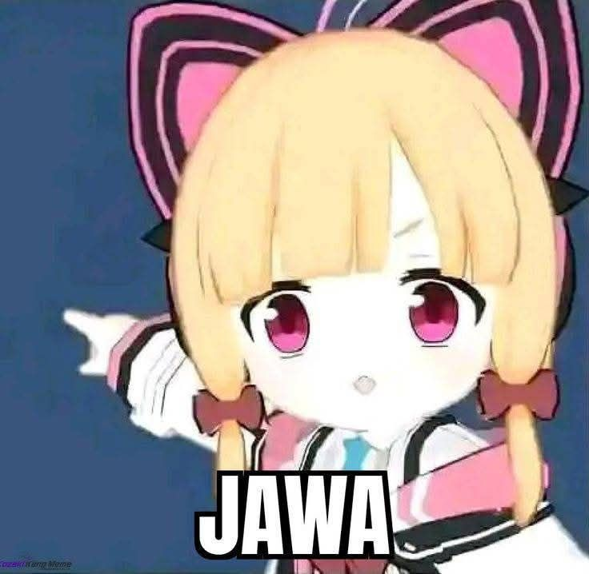
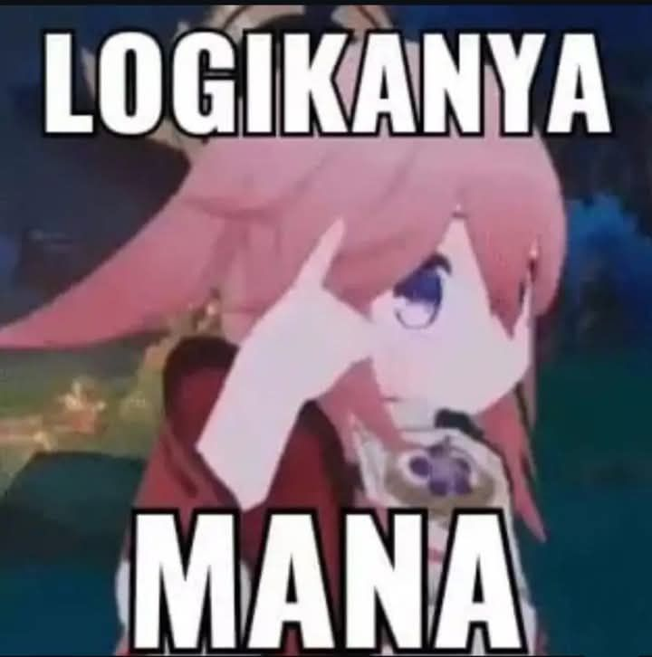

01 / DIVISI
Divisi Bahasa
Membina pembelajaran bahasa Jepang, pemahaman huruf kana, kanji, tata bahasa, dan simulasi kaiwa interaktif.
Lihat Profil Divisi →DIVISI MIRAI NO HANA
Kegiatan adalah ruang untuk menerapkan rasa ingin tahu di luar materi kelas dan membangun klub bersama-sama.

01 / DIVISI
Membina pembelajaran bahasa Jepang, pemahaman huruf kana, kanji, tata bahasa, dan simulasi kaiwa interaktif.
Lihat Profil Divisi →02 / DIVISI
Mewadahi ekspresi seni peran karakter anime/manga, workshop makeup, wig styling, dan kreasi properti panggung.
Lihat Profil Divisi →03 / DIVISI
Mengembangkan identitas visual, grafis media sosial, ilustrasi maskot Sora, serta desain merchandise resmi klub.
Lihat Profil Divisi →04 / DIVISI
Mengembangkan kemandirian finansial klub lewat stan kuliner Mirai no Konbini dan proyek bisnis kreatif saat festival.
Lihat Profil Divisi →PROGRAM KERJA
Empat program kerja yang menjadi wadah belajar, berkarya, dan berbagi pengalaman untuk seluruh anggota.

01 / PROGRAM KERJA
Kegiatan orientasi seru dan interaktif untuk menyambut serta mengenalkan klub kepada anggota baru.
Lihat Detail →
02 / PROGRAM KERJA
Program siaran radio sekolah peneman jam istirahat dengan obrolan Jejepangan dan titipan lagu seru.
Lihat Detail →03 / PROGRAM KERJA
Proyek kewirausahaan kreatif untuk menambah kas klub melalui penjualan produk saat event sekolah.
Lihat Detail →
04 / PROGRAM KERJA
Aksi sosial dan kepedulian berbagi takjil kepada masyarakat sekitar SMASYIMDUTA di bulan suci.
Lihat Detail →DOKUMENTASI
Kumpulan potret seru, hangat, dan berkesan dari berbagai kegiatan klub dalam baris galeri yang dapat digeser secara bebas.


